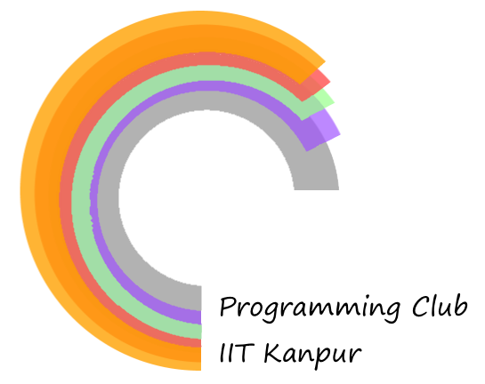

Talk is cheap, show us the code!
{% for post in paginator.posts %}
{{ post.title }}
{{ post.content | strip_html | truncatewords:45}}
»
{% endfor %}
{% if paginator.previous_page %}
Previous
{% else %} {% endif %} {% if paginator.next_page %}
Next
{% else %} {% endif %}
{% include widgets.html %}